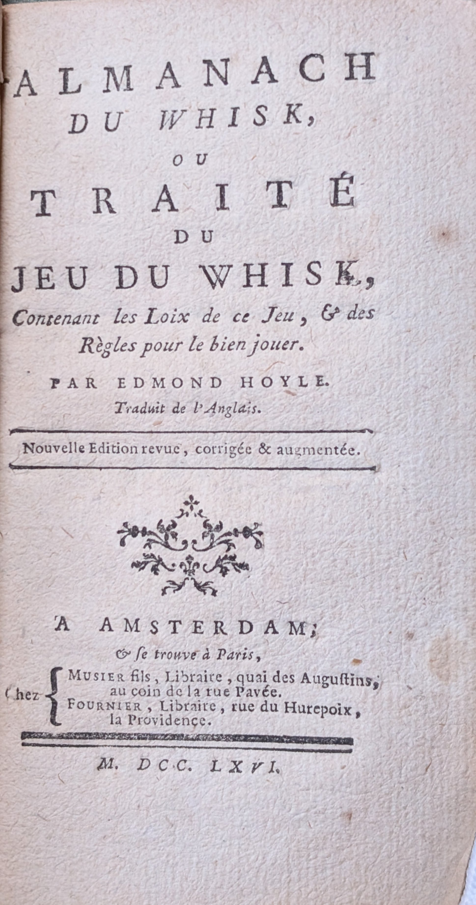

A Descriptive Bibliography of Edmond Hoyle
Copyright © 2014-26 by David Levy
(page updated 2026-03-20)User Guide
Musier.Whist.Fr.1766
Almanach du Whisk, Chez Musier Fils, 1766.
 |
Title: | ALMANACH | DU WHISK, | OU | TRAITÉ | DU | JEU DU WHISK, | Contenant les Loix de ce Jeu, & des | Règles pour le bien jouer. | PAR EDMOND HOYLE. | Traduit de l'Anglais. | [rule] | Nouvelle Edition revue, corrigée, & augmentée. | [rule] | [tailpiece] | A AMSTERDAM, | & ſe trouve à Paris, | Chez [four lines to right of bracket] | Musier fils, Libraire, quai des Auguſtins, | au coin de la rue Pavée. | Fournier, Libraire, rue du Hurepoix, | la Providence. | [oxford rule] | M. DCC. LXVI. |
| Collation: | 24o: π6 A–E12 F6(−F6 missing, blank?) [$½ signed]; 71 leaves, pp. [12 ] [i–ii] iii–iv, [1] 2–125 [126] |
| Contents: | Signature (Page) Reference | Contents | Signature (Page) Reference | Running Titles |
| π1r | half title | |||
| π1v | blank | |||
| π2r | title | |||
| π2v | blank | |||
| π3r | ‘CALENDRIER | POUR | L'ANNÉE 1767.’ | |||
| π3v | blank | |||
| π4r–π6v | calendar | |||
| A1r–A2v (i–iv) | ‘[headpiece] | INTRODUCTION. | Ceux qui n'ont aucune idée du | Jeu du Whisk, [...]’ | |||
| A3r–F3v (1–122) | ‘[headpiece] | TRAITE' | DU | JEU DU WHISK. | [...]’ | A3v (2) | ‘Trait du Jeu’ | |
| on A4r–F3r (3–121) | ‘Traité du Jeu | du Whisk.’ | |||
| on F3v (122) | ‘Traité du Jeu du Whisk.’ | |||
| F4r–F5r (123–125) | ‘[row of type orn] | TABLE | DES CHAPITRES | du Traité du jeu du Whisk. | [...]’ | |||
| F5v (126) | blank |
| Publisher: | Chez Musier fils, Chez Fournier |
| References: | Depaulis 103 |
| Copies Seen: | Levy [2248] |
| Other Copies: | BNF [KH-109-4]; Beauchene |